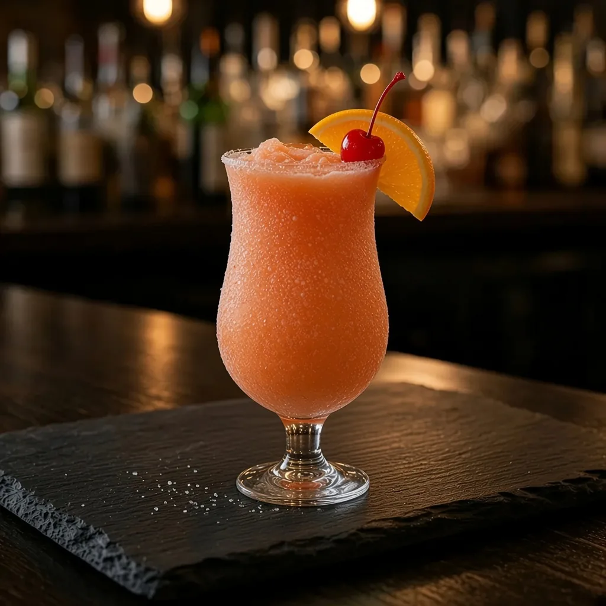

Home / Drinks / Frozen drinks
Bushwacker
A Caribbean chocolate-coconut milkshake with dark rum and coffee liqueur.

Home / Drinks / Frozen drinks
A Caribbean chocolate-coconut milkshake with dark rum and coffee liqueur.
Blend the cream of coconut and milk with 2 tbsp chocolate syrup, 2 oz cold coffee and the ice.
Pour it, then start a room. Drinking is optional in every game.
 Frozen Vodka LemonadeVodka and lemonade concentrate blended with ice. Three ingredients.
Frozen Vodka LemonadeVodka and lemonade concentrate blended with ice. Three ingredients.
 Frozen Gin and TonicA G&T slush. Freezing the tonic into cubes keeps it from tasting watery.
Frozen Gin and TonicA G&T slush. Freezing the tonic into cubes keeps it from tasting watery.

Frozen HurricaneTwo rums with passion fruit and orange, blended and served in the glass named after it. Frozen SangriaRed wine blended with frozen berries. No waiting overnight.
Frozen SangriaRed wine blended with frozen berries. No waiting overnight.